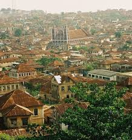

About Me
My name is Benjamin Akinwunmi. I was born and raised in southwest Nigeria and have spent most of my life in the rocky countryside of the city of Abeokuta. I currently work as Customer Support in a remote role. I love road trips, learning and trying out new food recipes from all over the world. My faith means everything to me.
Abeokuta
Abeokuta is an indigenous city north of Lagos, in southwest Nigeria. Abeokuta is filled with beautiful greenery and rocks beautifully sculpted by nature. Abeokuta is also home to one of the oldest christian chapels in Nigeria. It is also home to the birth of the musical genre, afrobeats. It is a civil state run by education driven indigenes.
